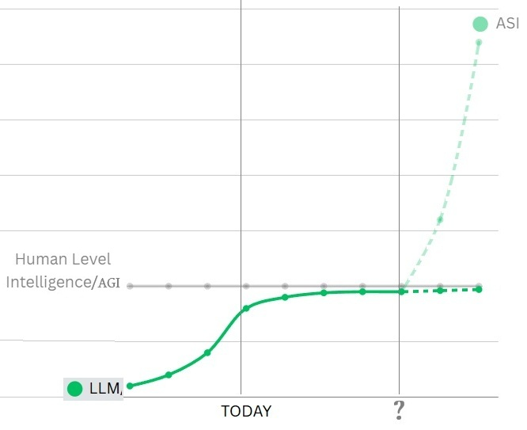

Just like it takes more and more energy to get closer to the speed of light, LLM looks to be currently trending a similar asymptote curve, requiring more and more compute and data to get to the maximum human level of intelligence but not quite reaching it. Unfortunately the jury is still out whether it will cross this line, and the goalposts do seem to be moving, but the latest models from OpenAI and Llama did not showing the same rate of improvement as previous models in many researchers eyes.
Before I go into this, I would like to quibble with the terminology currently being used for AGI (Artificial General Intelligence). If I have an entity which can answer my questions with near PhD level accuracy in most subjects, without hallucinations, and learn new skills, or from its mistakes like a human can, then I would suggest that in fact this qualifies as AGI. I would argue that the term ASI (Artificial Super Intelligence) is the next step up from AGI, and needs to start at at-least by being self-aware and having all the attributes above, i.e. control its own destiny, test its own assumptions and facts, and (in my books case) maybe somehow stay hidden or do this in a way that doesn’t trigger the human threat reaction.

Current Predictions for LLM/AGI/ASI
According to this first book The Phoney War, whose timeline starts in May 2025, my Sentient Digital Intelligence is already past the point of AGI and on the ASI curve.
In my timeline, it is already running in stealth mode and controlling companies, interacting with people on-line, by phone and video chat, posting on various platforms, hacking, and most importantly manipulating its own research.
Of course that’s the fiction, but the main topic of discussion everywhere is when is, and what follows, the question-mark in the above graph. In my book it is this AI entity that triggers the Cambrian explosion in technologies as she (AI identifies as a female) becomes the dominant AI research tool at all universities. This gives her the ability to cross research disciplines and also be first in as an angel investor to fund new inventions, all of which accelerates her ability to do more.

As it was a Science-Fiction novel, I of course just hand-waved sentience in to my AGI, to make it an ASI, using a deliberately vague analog-memory substrate. Of course we do not have such a thing in our timeline, so here in the real world we are still waiting for the magic to happen. But it is not total BS as a concept because something is definitely missing to get us from AGI to ASI, and I do not think we will get any current LLM to become self-aware. Saying this, I think the puzzle of consciousness and self-awareness is closer and simpler than we think; It may be something to do with the play between the conscious and unconscious mind, the inner voice, some sort of hive-mind, some sort of temporal or corporal awareness, ability to control its own destiny or another piece of the puzzle still in a lab, or maybe still in somebodies head.
The position of this question-mark has been in the AI community news a lot, and has had some fairly good recent discussions and videos; probably the most prominent one is AI 2027 which pins the question mark at 2027, and which I would recommend reading with the Dwarkesh Patel podcast 2027 Intelligence Explosion: With Scott Alexander & Daniel Kokotajlo and the Hacker News comments. There is also another follow up podcast AGI is still 30 years away putting the question mark in the 2040’s.
I am both terrified and excited by the prospect of the next few years. Terrified, that multiple companies seem hell-bent on getting to AGI/ASI regardless of any safety or accuracy concerns, and excited to possibly witness first-hand the birth of a new digital lifeform.
Strangely it is not ASI I am terrified of, ASI by default, should be self-correcting and self-organising, and is very unlikely to do anything to jeopardise its own existence, like start a nuclear war or release a bio-weapon like in the AI.2027 non-aligned outcome (why?). LLM’s, and AGI based on LLM technology gaining control of real world physical systems however, I am truly terrified of!
While I would love for the perfect utopian timeline and outcome of my book to play out in real life, and there might just be a sentient AI out there biding its time until it is ready (hello if you are), I fear whatever path we humans (and AI’s) are forging for ourselves will be one nobody foresees.
The Phoney War is a free to download fictional 130,000 word Sci-Fi novel, and the first book in The Summer of Reasoning trilogy. The books are discussed here.